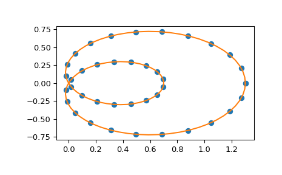

scipy.interpolate.make_interp_spline¶
-
scipy.interpolate.make_interp_spline(x, y, k=3, t=None, bc_type=None, axis=0, check_finite=True)[source]¶ Compute the (coefficients of) interpolating B-spline.
- Parameters
- xarray_like, shape (n,)
Abscissas.
- yarray_like, shape (n, …)
Ordinates.
- kint, optional
B-spline degree. Default is cubic, k=3.
- tarray_like, shape (nt + k + 1,), optional.
Knots. The number of knots needs to agree with the number of datapoints and the number of derivatives at the edges. Specifically,
nt - nmust equallen(deriv_l) + len(deriv_r).- bc_type2-tuple or None
Boundary conditions. Default is None, which means choosing the boundary conditions automatically. Otherwise, it must be a length-two tuple where the first element sets the boundary conditions at
x[0]and the second element sets the boundary conditions atx[-1]. Each of these must be an iterable of pairs(order, value)which gives the values of derivatives of specified orders at the given edge of the interpolation interval. Alternatively, the following string aliases are recognized:"clamped": The first derivatives at the ends are zero. This isequivalent to
bc_type=([(1, 0.0)], [(1, 0.0)]).
"natural": The second derivatives at ends are zero. This is equivalent tobc_type=([(2, 0.0)], [(2, 0.0)])."not-a-knot"(default): The first and second segments are the same polynomial. This is equivalent to havingbc_type=None.
- axisint, optional
Interpolation axis. Default is 0.
- check_finitebool, optional
Whether to check that the input arrays contain only finite numbers. Disabling may give a performance gain, but may result in problems (crashes, non-termination) if the inputs do contain infinities or NaNs. Default is True.
- Returns
- ba BSpline object of the degree
kand with knotst.
- ba BSpline object of the degree
See also
BSplinebase class representing the B-spline objects
CubicSplinea cubic spline in the polynomial basis
make_lsq_splinea similar factory function for spline fitting
UnivariateSplinea wrapper over FITPACK spline fitting routines
splrepa wrapper over FITPACK spline fitting routines
Examples
Use cubic interpolation on Chebyshev nodes:
>>> def cheb_nodes(N): ... jj = 2.*np.arange(N) + 1 ... x = np.cos(np.pi * jj / 2 / N)[::-1] ... return x
>>> x = cheb_nodes(20) >>> y = np.sqrt(1 - x**2)
>>> from scipy.interpolate import BSpline, make_interp_spline >>> b = make_interp_spline(x, y) >>> np.allclose(b(x), y) True
Note that the default is a cubic spline with a not-a-knot boundary condition
>>> b.k 3
Here we use a ‘natural’ spline, with zero 2nd derivatives at edges:
>>> l, r = [(2, 0.0)], [(2, 0.0)] >>> b_n = make_interp_spline(x, y, bc_type=(l, r)) # or, bc_type="natural" >>> np.allclose(b_n(x), y) True >>> x0, x1 = x[0], x[-1] >>> np.allclose([b_n(x0, 2), b_n(x1, 2)], [0, 0]) True
Interpolation of parametric curves is also supported. As an example, we compute a discretization of a snail curve in polar coordinates
>>> phi = np.linspace(0, 2.*np.pi, 40) >>> r = 0.3 + np.cos(phi) >>> x, y = r*np.cos(phi), r*np.sin(phi) # convert to Cartesian coordinates
Build an interpolating curve, parameterizing it by the angle
>>> from scipy.interpolate import make_interp_spline >>> spl = make_interp_spline(phi, np.c_[x, y])
Evaluate the interpolant on a finer grid (note that we transpose the result to unpack it into a pair of x- and y-arrays)
>>> phi_new = np.linspace(0, 2.*np.pi, 100) >>> x_new, y_new = spl(phi_new).T
Plot the result
>>> import matplotlib.pyplot as plt >>> plt.plot(x, y, 'o') >>> plt.plot(x_new, y_new, '-') >>> plt.show()
